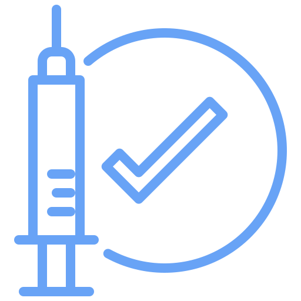
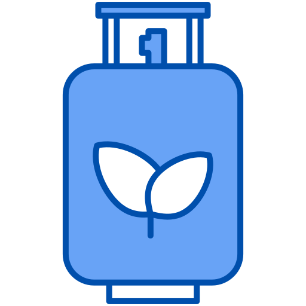

At Futura, we strive for excellence in our innovative medical solutions and in creating an enriching environment for our employees. Our commitment to greatness has led to numerous nominations as the best place to work. We also offer comprehensive benefits packages, emphasizing the importance of our employees’ health and well-being. Our mission extends beyond great working conditions. We aim to change the healthcare industry with our groundbreaking medical solutions. We invite you to join us in making a significant impact on the world of medicine. The future of medicine is unfolding at Futura. We’re at the cutting edge of medical innovation, and we invite you to be part of this exciting journey. Join us, and together, let’s shape the future of medicine.
employees in our diverse workforce, each contributing unique skills and perspectives.
prescribed vaccines. Our commitment to public health is demonstrated by over 16.3 million vaccines prescribed.
Locations opened. Our 5,207 locations worldwide allow us to deliver our medical solutions globally.
in profits, our financial success, with about $1.2 billion in profits, is reinvested into research and development.
Lowered greenhouse emissions. This is a massive improvment reflecting our commitment to environmental sustainability.